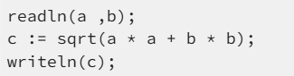
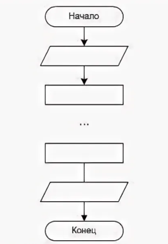
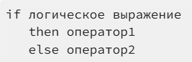
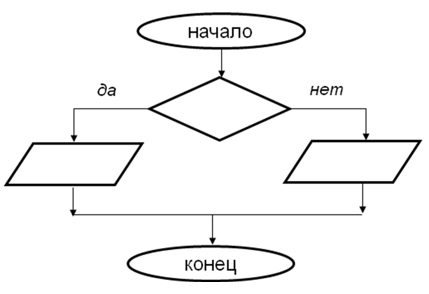
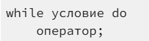
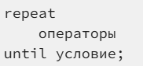
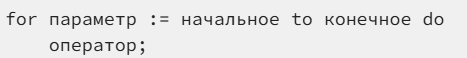
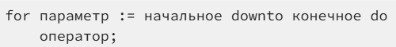
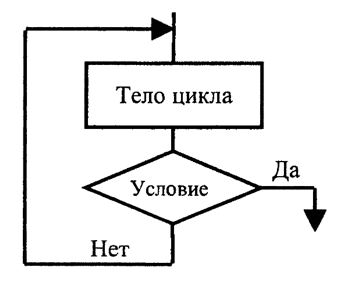

Программы в Паскале строятся по-разному в зависимости от задачи. Если действия выполняются строго друг за другом — это линейный алгоритм. Если программе нужно сделать выбор (например, «число положительное или отрицательное?») — мы используем разветвляющийся алгоритм. Самые мощные программы используют циклы. Они позволяют выполнять одно и то же действие сотни раз подряд, не переписывая код вручную. Понимание этих трех структур — ключ к созданию любых сложных систем.
Общая классификация алгоритмов в языке Pascal
Наглядная схема взаимосвязи основных алгоритмических структур: линейных процессов, различных видов ветвлений и типов циклов с их графическим представлением.
Ссылка на интерактивную версиюЛинейный алгоритм
Линейной структурой или следованием называют последовательное однократное выполнение двух или более операторов. Например:

Размещение блоков в линейном алгоритме:

Разветвляющийся алгоритм
Разветвленная структура предусматривает выбор одной из двух или более последовательностей операторов в зависимости от некоторого условия. Основной вариант реализации в программе — с помощью условного оператора:

Если значение логического выражения — истина, выполняется «оператор1», иначе (т.е. при ложности логического выражения) — «оператор2».
Размещение блоков в разветвляющемся алгоритме:

Циклический алгоритм
В алгоритме циклической структуры некоторая последовательность действий повторяется многократно. Последовательность операторов, описывающих повторяющиеся действия, называют телом цикла. Циклическая структура реализуется с помощью операторов цикла. В Pascal имеется 3 типа таких операторов: цикл с предусловием, цикл с постусловием и цикл с параметром. Они отличаются друг от друга тем, как определяется число повторений.
Циклы с условием обычно используются в тех случаях, когда число повторений заранее неизвестно. Нужно повторять действия еще раз либо цикл должен быть завершен, определяется условием.
Если условие проверяется перед выполнением действий тела цикла, то такой цикл называют циклом с предусловием или циклом «пока» («повторять пока истинно условие»). В Pascal он выглядит следующим образом:

Другой тип цикла с условием — цикл с постусловием, в котором проверка условия происходит после выполнения операторов тела цикла. Действия повторяются до того момента, когда условие станет истинным. В Pascal он записывается следующим образом:

В тех случаях, когда количество посторений известно заранее (до начала цикла), обычно бывает удобнее использовать цикл с параметром. Он выполняется следующим образом: переменная-параметр (её также называют счетчиком) принимает последовательные значения в заданных пределах и при каждом из них выполняются операторы тела цикла. В Pascal оператор цикла с параметром выглядит следующим образом:

(в таком случае параметр будет увеличиваться). Если необходимо, чтобы значения параметра убывали, оператор немного изменяется:

Размещение блоков в циклическом алгоритме:

Сравнительная таблица
| Тип алгоритма | Ключевые слова | Когда использовать? |
|---|---|---|
| Линейный | begin, end, := | Простые расчёты по формулам |
| Разветвляющийся | if, then, else | Проверка условий, выбор пути |
| Циклический | for, while, repeat | Повторение действий (счётчики, ряды) |